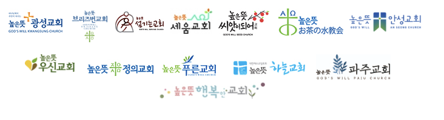
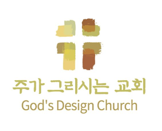

높은뜻 하나되는 교회 비전
One in God, One in Love, One Korea
하나님과 하나 되고, 너와 내가 하나 되며, 남과 북이 하나 되는 교회
- 우리의 정체성
- 높은뜻 하나되는 교회는 북한 선교와 통일을 위해 준비하라는 하나님의 부르심에 순종하여 세워진 교회입니다.
- 우리가 추구하는 삶
- 우리는 하나님 나라의 복음을 전하고, 하나님과의 친밀함을 누리며, 예수 그리스도를 아는 삶의 행복을 경험하기를 갈망합니다.
섬기는 사람들
파송 & 협력 선교사
높은뜻 형제교회

분립개척

윤성철 목사 · 2025년 3월높은뜻 정신
하나님이 주인 되시는 교회
하나님께 영과 진리로 예배하는 교회
자세히
모든 예배로 하나님께 영광을, 성도에게 충만한 은혜를.
모든 예배를 통하여 하나님은 영광 받으시고 모든 교인들은 충만한 은혜를 받게 하는 것이 높은뜻 교회의 목표입니다.
하나님의 식과 법을 고집하는 교회
자세히
높은뜻은 High Will이 아니라 God’s Will입니다.
우리는 하나님의 뜻이 이 땅에서 이루어지게 하는 것이 교회의 목표입니다.
하나님이 기뻐하시는 일에 힘쓰는 교회
자세히
하나님이 지금 가장 하고 싶어 하시는 일에 힘씁니다.
높은뜻 교회는 하나님이 좋아하시는 음식이 가득한 잔칫상을 차려드리는 것처럼 하나님이 지금 가장 하시고 싶어 하시는 일들을 하려고 노력하고 있습니다.
성경적 민주정치를 위해 힘쓰는 교회
자세히
차별 없는 장로정치와 협동 목회를 추구합니다.
높은뜻 교회는 교회의 민주주의 정치를 추구합니다. 하나님이 주인이 되시기 위해 성도들 사이에 그 어떠한 차별도 없는 올바른 장로정치와 전문 분야의 목회가 균형을 이루는 협동 목회를 추구합니다.
십일조, 희년정신을 실천하는 교회
자세히
온전한 십일조, 예산의 1/3 이상은 교회 밖으로.
물질과 재산의 주인이 자신이 아니라 하나님이라는 고백의 실천으로써 온전한 십일조 생활을 중히 여깁니다. 희년재단을 통하여 희년정신을 실현하며 교회 예산의 1/3 이상을 교회 밖을 위하여 사용하려 합니다.
교인들을 세상의 왕 같은 제사장으로 키우는 교회
자세히
모든 직업은 성직, 각자의 자리에서 세상을 섬깁니다.
높은뜻 교회는 하나님이 주신 모든 직업을 다 성직으로 이해합니다. 교인 모두가 다 자기 전문적인 직업 영역에서 왕 같은 제사장이 되어야 함을 믿습니다. 교인들이 세상을 섬기기를 원합니다.